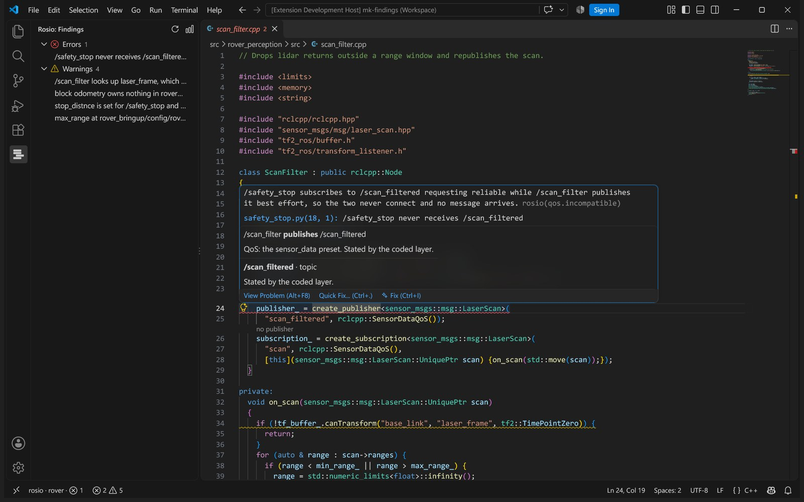

rosio
The running robot publishes /scan best effort while the source asks for reliable, so depth_monitor never receives a message. Edit src/depth_monitor.cpp:41.
The mark is the product. Four layers of one robot stacked in register, and the one that slipped out of line. Pick a layer to see which one disagrees.
The mark
Four bars on a 24 unit square, one per layer: declared, coded, observed, recorded, top to bottom. The third is set six units right and carries the accent, because observed against coded is the drift people meet first.
The bars are square. The offset is the only gesture, so nothing else moves: no rounding, no outline, no second colour inside the stack.
- 16
- 24
- 32
- 64
Clear space around the lockup is the height of one bar on every side. The wordmark is Geologica 600 in lowercase, tracked at minus four percent, and sits on the baseline of the fourth bar. Below 16 pixels the mark goes alone. Never colour the bars by layer, never round them, never move a bar other than the third.
Type
Ag
Geologica
The parameter max_speed is set in three files and read in none.
Параметр max_speed задан в трёх файлах и не читается нигде.
Geologica for everything a person reads: headings, prose, interface labels. A variable grotesk with Latin and Cyrillic, licensed OFL, so it ships inside the wheel and the extension and works offline. Weights 400, 500 and 600, nothing lighter on a dark ground.
$ rosio drift --fail-on error
error qos.incompatible /scan
depth_monitor asks reliable, the driver offers best effortJetBrains Mono for code, ids, paths and terminal output, and only there. A label is never set in mono to look technical.
- Displayclamp 48 to 160, 600, minus 4.5 percent
- Headingclamp 32 to 64, 600, minus 3 percent
- Lead20 to 26, 400
- Body17 to 19, 400, leading 1.5
- Small and interface13 to 14, 500
Colour
One ground, one ink, one accent. Bronze is for the third bar and the one action on a screen. Everything else that has colour is data.
Night
- ground
#111111- surface
#1c1c1c- ink
#f2f2f2- quiet
#9a9a9a- bronze
#b39780
Paper
- ground
#f4f4f2- surface
#e8e8e4- ink
#141414- quiet
#5c5a55- bronze
#7a5f4a
The four layers
The four steps were chosen by computation: every pair stays apart under protan and deutan simulation and under normal vision, on both grounds. A layer colour marks a bar, a dot or an edge and never sets text. Text wears the ink, with the layer name beside the mark.
Severity
error breaks the gate, a robot that cannot run as written
warn drift worth a look
info a gap in what rosio could read
Red and amber belong to severity and nowhere else, and each comes with its shape and its word. Info carries no colour at all.
Pictures
The product as it runs, in its own colours. Screenshots are taken at the real window size and cropped to the line that matters, never scaled down until the labels blur, never placed in a laptop or browser frame. No stock photographs, no renders, no people at laptops.

In use
- qos.incompatible/scan
- remap.matches_nothingbringup.launch.py
- param.set_undeclaredreal.yaml
- remap.unresolvedsensors.launch.py
depth_monitor asks for reliable on /scan, and the driver publishes best effort.
coded observed
| parameter | value | layer |
|---|---|---|
scan_speed | "fast" | declared |
scan_speed | 2.0 | coded |
publish_rate | 30 | declared |
publish_rate | 11.8 | recorded |